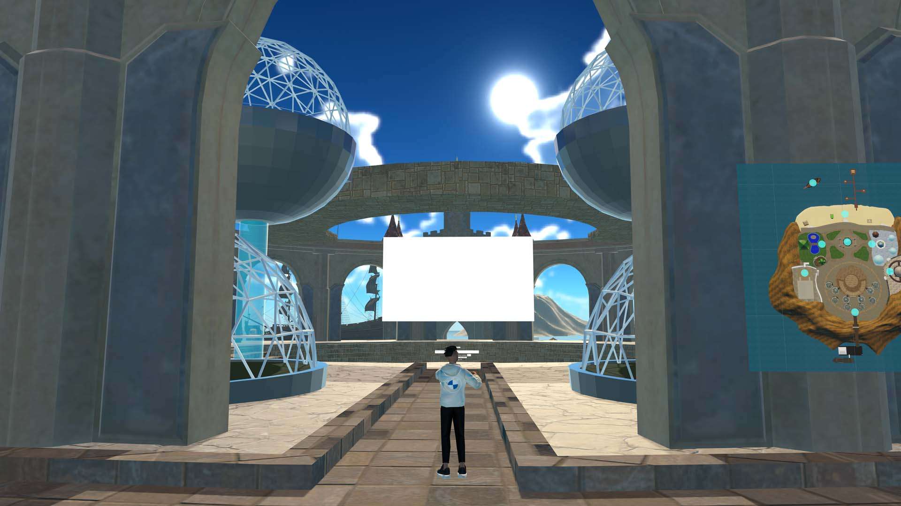
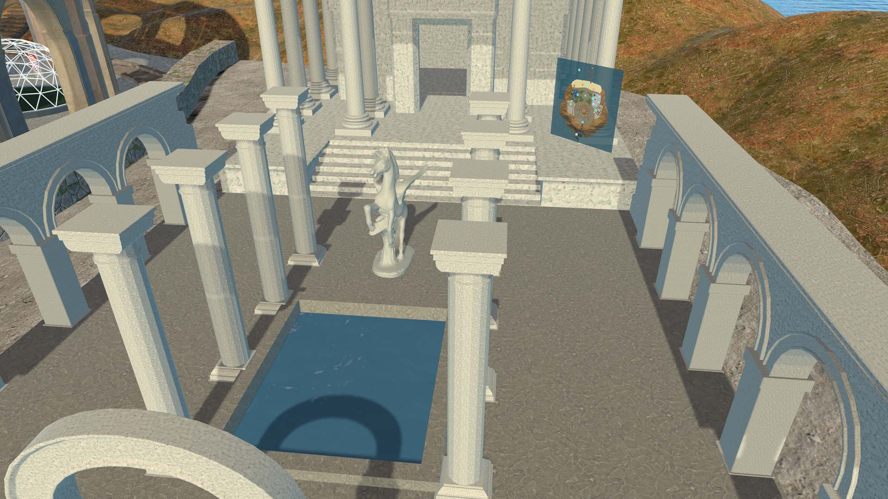
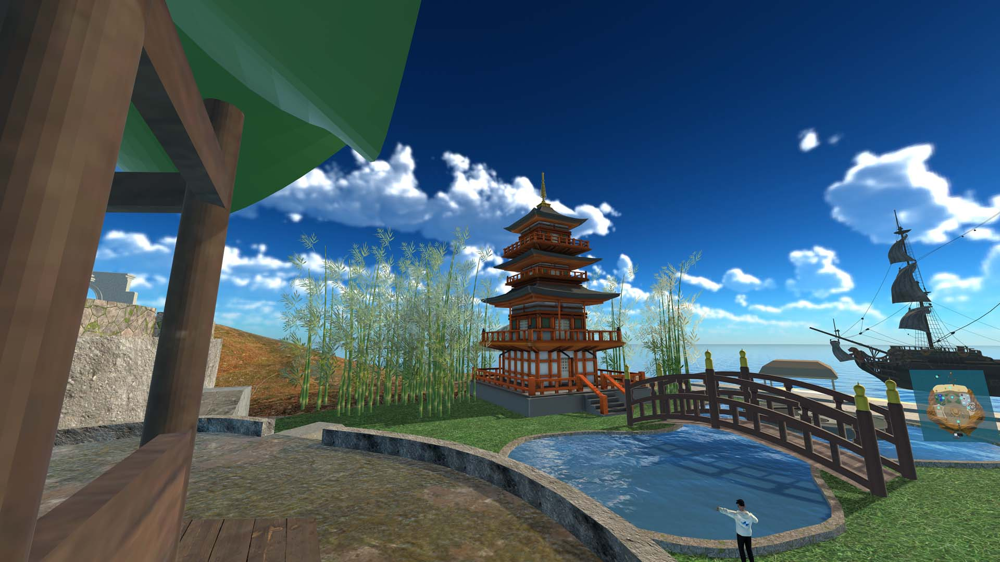
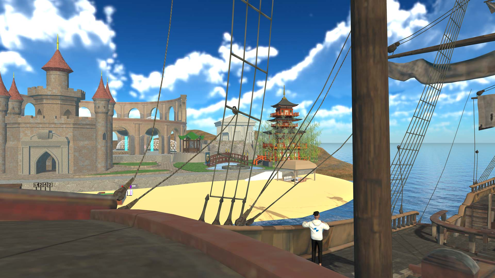
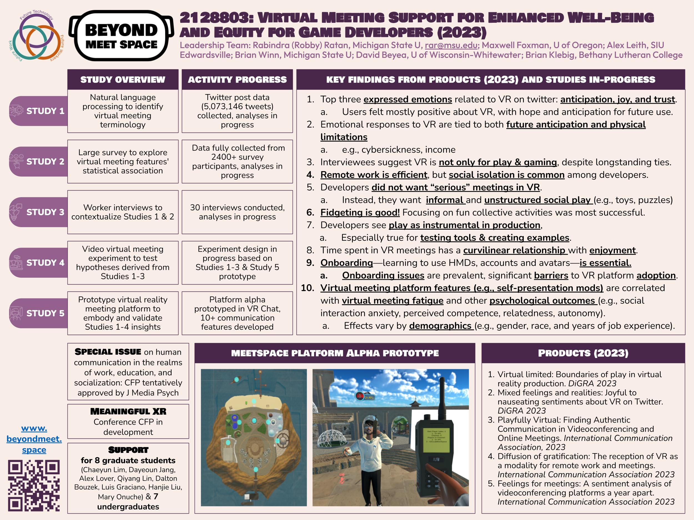
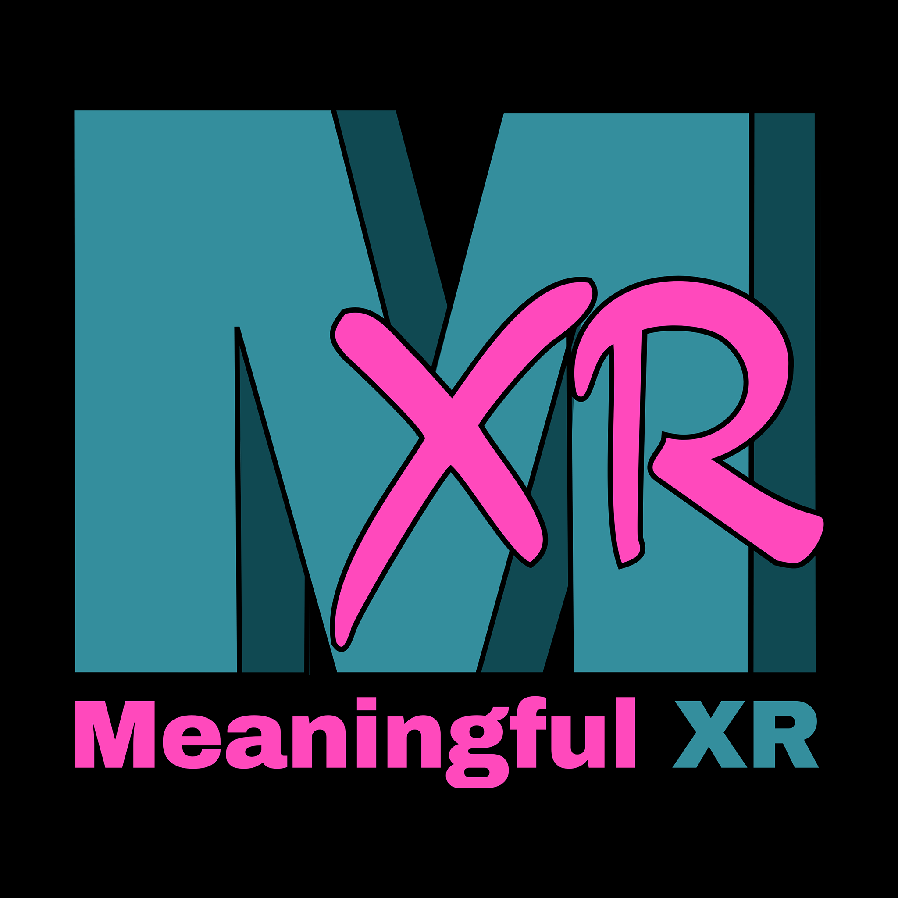

Fact sheet
- Founded
- December 9, 2019
- Grant period
- October 2021 to 2025
- National Science Foundation awards
- Future of Work at the Human-Technology Frontier awards 2128803 (lead), 2128746, 2128813, and 2128991
- Website
- beyondmeet.space
- Platform
- Launch in VRChat
- Publications
- Listed by area on the Research page
- Conference
- Meaningful XR, annual since 2024
Approved copy
Short
Beyond Meet Space is a research collective studying how people meet, work, and play when they are not in the same room. Meeting since 2019 and supported by a 2021 to 2025 NSF Future of Work grant, the group studies and designs virtual meeting platforms grounded in equity, game studies, and values-based design.
Long
Beyond Meet Space (BMS) is a research collective that began meeting in December 2019 and found its direction during the COVID-19 pandemic, when it turned to the study of virtual meetings. Supported by a U.S. National Science Foundation Future of Work grant (FW-HTF-R 2128803, 2021 to 2025), BMS conducted a five-study research program investigating virtual meeting fatigue, equity in avatar use, playful design, hybrid participation, and XR platform design. The team built a free prototype meeting platform in VRChat, helped start the annual Meaningful XR conference, and has published more than a dozen peer-reviewed papers in journals including Computers in Human Behavior, PLOS One, and IEEE Transactions on Games.
Platform screenshots
Select a name to download the full image.

Amphitheater entry 
Pantheon 
Pagoda 
Aerial view 
Spawn ship 
Avatar in the platform entrance


Research poster, 2023

Presented at the NSF Future of Work principal investigator meeting. It covers the five studies and the early platform prototype.
Conference mark
